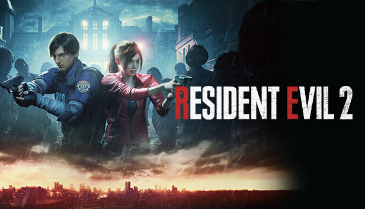

The remake stays true to the original's plot. However, the "zapping" system is not present in the remake. Both Claire and Leon have their own scenarios that can be played in any order, and what happens in one will affect the other. However, there is only one scenario per character; there is no Leon A/B option for instance. Narrative-wise, the events of both the A/B scenarios of each character in the original game are meshed into a single scenario.
Claire Redfield, a college student, arrives in Raccoon City to find her brother Chris, a member of the S.T.A.R.S. unit. Upon arrival, she finds the city overrun by zombies and other monsters. She meets Sherry Birkin, a young girl who is being pursued by a monster called the G-Virus. Claire helps Sherry escape and they eventually find themselves at the police station, where they meet Leon S. Kennedy, a rookie cop on his first day of duty. Leon and Claire team up to survive the horrors of Raccoon City and uncover the truth behind the outbreak.
Leon S. Kennedy is a rookie cop on his first day of duty in Raccoon City. Thrust into a city overrun with zombies and mutated creatures, he must quickly learn to conserve ammo, use cover, and move carefully through the ruined police station. His investigation forces him to balance combat, puzzle-solving, and rescue efforts while trying to stay ahead of deadly threats like Lickers and the relentless Nemesis-like monster. Along the way, he meets the enigmatic Ada Wong, a mysterious woman whose motives remain
unclear but whose timely information and secretive aid help him discover key pieces of the outbreak. Their uneasy partnership adds tension and intrigue, making Leon’s journey both
dangerous and compelling as he fights to uncover the truth and find a way out.